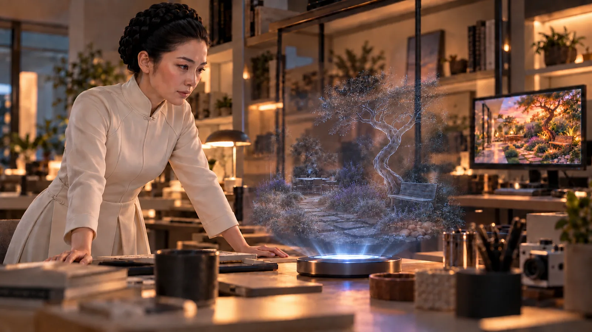

A sala de trabalho da Reya parecia uma feira de tecnologia. De um lado, componentes reluzentes e precisos, ainda com etiquetas de inventário — a contribuição de Lupa, retirada discretamente do laboratório da Acrópole. Do outro, uma coleção caótica de fios, placas desencontradas e peças que pareciam ter sobrevivido a três guerras tecnológicas — o estoque lendário de quinquilharias de Otto e Tupac.
— Presente do departamento de psicoacústica — anunciou Lupa, organizando com cuidado cirúrgico os componentes novos. — Sensores de áudio de última geração, processadores espaciais... tudo que precisamos para criar um ambiente sonoro perfeito.
Tupac completou com uma placa-mãe que parecia ter sido resgatada de uma escavação arqueológica:
— E eu trouxe a alma do sistema. Esta velhinha aqui tem mais personalidade que todos os servidores da Acrópole juntos.
Reya observava a cena com as mãos nos quadris, coordenando as operações. Maya, a mais velha, ajudava a separar cabos por cor com uma concentração adulta, enquanto Kauê observava fascinado as ferramentas. Aru tentava entender como as peças se encaixavam, e Amora distribuía suco para todos como uma anfitriã em treinamento. Lúmen, o caçula, sentado num cantinho seguro, construía torres com as caixas vazias.
— Status do isolamento de rede? — Reya perguntou para Otto.
— Completo — ele confirmou, fechando o último painel de controle. — A casa é uma ilha digital. A Acrópole não está preparada para isso — eles gastaram décadas otimizando sistemas para ovelhas pacatas, não para pais rebeldes com conhecimento dos frameworks antigos.
Foi então que Otto apresentou a ideia central. Mostrando as projeções das assinaturas energéticas de Zee, ele explicou:
— Se ele é um fantasma na máquina, vamos construir uma casa para o fantasma. Uma simulação estável, fora dos servidores da Acrópole.
A discussão fluiu naturalmente para o local ideal.
— O Jardim de Zee — Reya sugeriu, sem hesitar. — O lugar preferido dele.
Enquanto Otto e Tupac montavam o computador caseiro — uma combinação peculiar de tecnologia de ponta e peças vintage —, Reya mergulhou no código do framework de realidade aumentada.
— Estou criando uma nova instância — explicou ela para Lupa. — Como um universo paralelo, totalmente desconectado do servidor global.
Lupa assumiu a parte sensorial do projeto.
— O jardim precisa soar real — ela explicou para as crianças, que a observavam fascinadas. — Cada som precisa contar uma história.
Kauê puxou a manga de Lupa:
— Papai dizia que podia ouvir as minhocas trabalhando na terra quando ficava quieto! É verdade isso?
Lupa sorriu, o primeiro sorriso genuíno que Reya via nela.
— Talvez, Kauê. Vamos ver se colocamos esse som também.
Ela ajustou seus equipamentos, criando camadas sonoras sutis que iam desde o zumbir distante de abelhas até o sussurro quase imperceptível das folhas.
Reya observava Lupa trabalhar, impressionada com sua expertise.
— Onde você aprendeu tudo isso sobre psicoacústica, Lupa?
— Trabalho com planejamento acústico de RA para espaços públicos — Lupa respondeu, mantendo o foco em seus ajustes. — Moldamos o humor das pessoas através do som, sem que elas percebam.
Enquanto isso, as crianças se tornaram consultoras criativas do projeto. Maya descrevia com precisão arquitetônica a estrutura do jardim. Kauê lembrava dos cheiros — “terra molhada depois da chuva, lavanda ao entardecer”. Aru ajudava com as cores, Amora insistia na importância das joaninhas, e até Lúmen contribuía, mostrando como as pedras brancas refletiam a luz do sol.
O dia passou num ritmo frenético de criação. Quando o sol real começou a se pôr, o jardim digital estava completo — uma réplica perfeita que transcendia a simples aparência visual. Cada textura, cada som, cada detalhe respirava a essência de Zee.
— Está pronto — Otto anunciou, as mãos tremendo de cansaço. — Tudo conectado e funcionando.
A tensão na sala era palpável enquanto Reya preparava o sistema final.
— Criando a instância isolada... agora.
O jardim ganhou vida nas telas, tão real que quase podiam sentir o cheiro. A luz do crepúsculo banhava os canteiros exatamente como Zee gostava. O banco de madeira áspera sob a árvore torta, o canteiro de lavanda, o caminho de pedras — tudo estava lá, perfeito.

Por um longo momento, ninguém falou. Eles apenas observaram, maravilhados. O cansaço do dia inteiro de trabalho parecia derreter diante daquela criação. Tupac foi o primeiro a quebrar o silêncio.
— Conseguimos — ele sussurrou, como se temesse quebrar o feitiço. — Realmente conseguimos.
Reya sentiu um nó na garganta. Ali estava, diante deles, não apenas um código ou uma simulação, mas um pedaço do homem que ela amara, preservado em zeros e uns. Era mais do que uma realização técnica; era um ato de amor, uma oração digital.
— Missão cumprida — ela disse, sua voz carregada de emoção.
Foi então que Otto, ainda monitorando os sinais, franziu a testa.
— Um momento...
O tom de sua voz fez todos se virarem. Ele estava olhando fixamente para o monitor de rastreamento, onde a assinatura energética de Zee sempre dançava em padrões familiares.
— Os sinais... estão enfraquecendo.
A linha que normalmente oscilava com a energia poética de Zee começou a achatar. Não era uma queda abrupta, mas uma lenta, agonizante diminuição. Como um coração cansado que ia parando batida a batida.
— O que está acontecendo? — Lupa perguntou, aproximando-se.
— Não sei — Otto respondeu, os dedos voando sobre o teclado. — É como se... como se ele estivesse sumindo.
Reya correu para a janela. Ela se lembrou que, no começo desse surto poético das máquinas, um poste de luz próximo da casa começara a alternar todo tipo de cor a cada segundo. Não mais. A normalidade cinza e utilitária havia retornado.
— A poesia — ela disse, voltando-se para o grupo. — Sumiu. Está tudo... comum outra vez.
Maya foi a primeira das crianças a perceber.
— Onde foi o papai? — ela perguntou, seu rosto confuso. — Ele não gostou do jardim que fizemos?
Kauê, percebendo a decepção dos adultos, perguntou em voz baixa:
— Papai foi embora de novo?
O silêncio que se seguiu foi mais profundo do que qualquer desconexão tecnológica. Era o som da esperança sendo posta à prova.